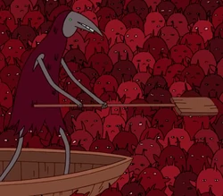

Você chegou e como conhece seu pai, tem certeza de que ele
prendeu Finn e jack nas masmorras, então
é pra lá que você vai. O problema é que entre você e as escadas
tem esse mar de almas entediadas que não abrem caminho.
Você tem algumas opções para superar esse problema.
Qual caminho você escolhe?

1 - Avista o barqueiro e vai em direção dele para pegar uma carona.
2 - Você se lembra que pode voar, então pra que perder mais tempo?
3 - Simplesmente pula na multidão como num show de rock para poder ser levada por eles.